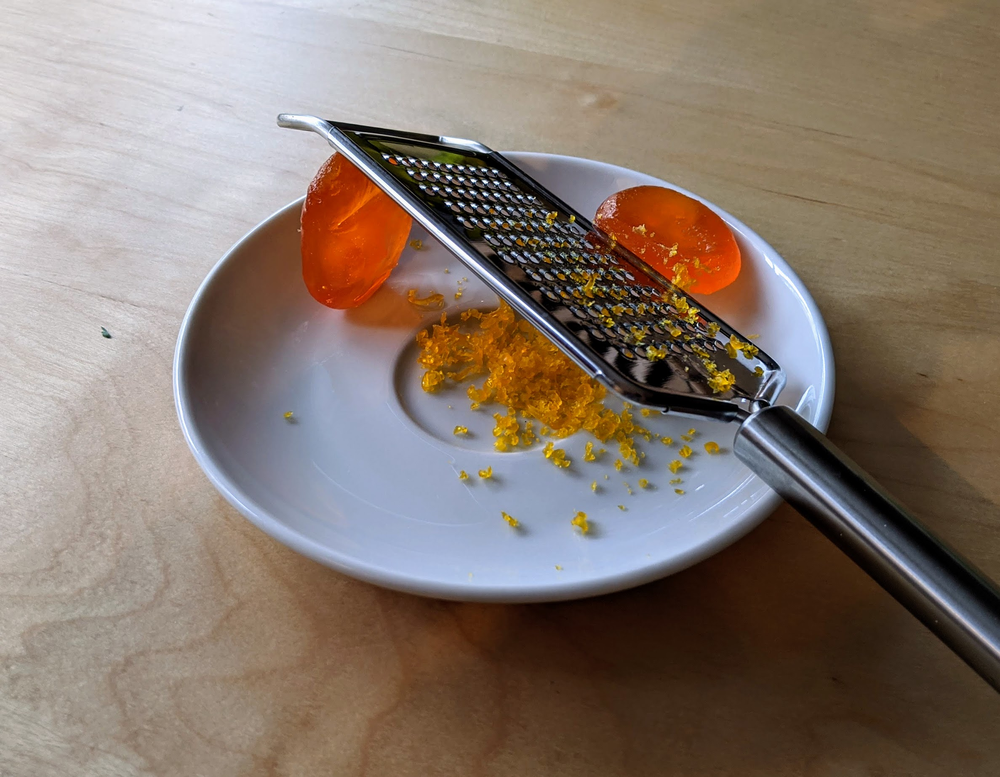

Jaunes d'œufs séchés au sel

Pour, bah, autant de jaunes que tu veux :
- Des jaunes d'œuf
- Du sel
- Disposer une bonne couche (disons 1.5cm) de sel dans un récipient plat, assez large pour qu'on puisse y mettre tous les jaunes d'œufs avec au moins 2-3 cm de marge entre chaque et le bord du récipient. Avec le dos d'une cuillère, creuser autant de petits puits qu'on a d'œufs dans la couche de sel. Il ne faut pas creuser jusqu'au fond du récipient.
- Diposer un jaune d'œuf dans chaque puits. C'est important que les jaunes soient entiers, et qu'il ne reste pas de blanc d'œuf autour.
- Recouvrir chaque jaune d'œuf de sel, pour qu'on ne voit plus rien de jaune. Laisser reposer au frigo une nuit (ou un peu plus).
- Faire préchauffer un four à 60°C. Récupérer les jaunes d'œufs (qui doivent avoir pris une consistance de bonbon gélatineux), les rincer sous l'eau froide et les sécher avec du papier absorbant.
- Les enfourner sur du papier cuisson pendant 3 heures pour les faire sécher.
- Laisser refroidir au frigo. Les jaunes d'œufs se râpent avec une râpe fine, et remplaçent à merveille le parmesan sur les pâtes, le risotto, ou même les légumes au four.